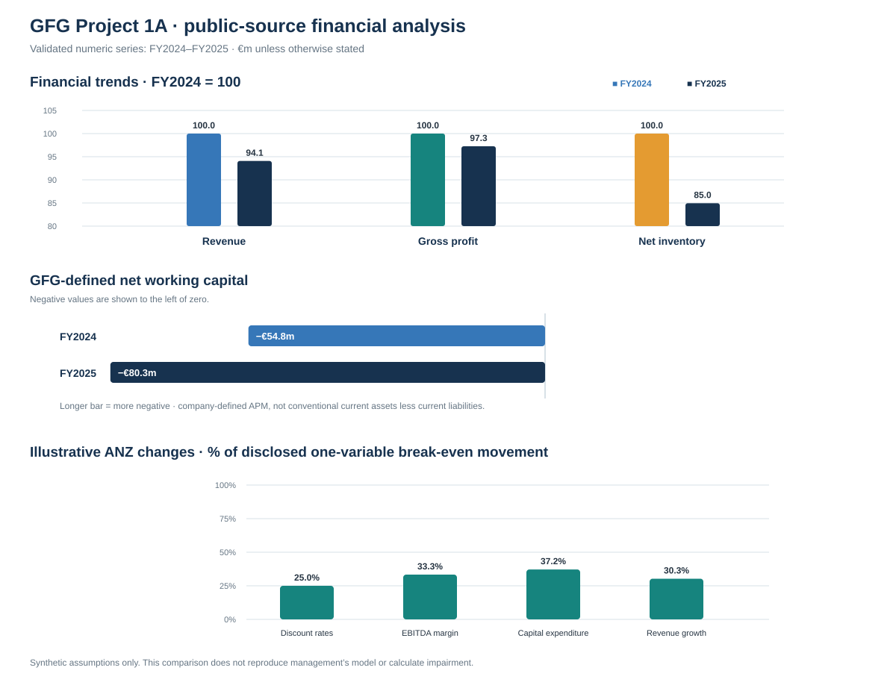

Independent public-source study · educational portfolio project
Global Fashion Group S.A.AI-assisted financial analysis
A traceable review of public financial statements that brings together IFRS accounting analysis, Python, Excel and human-checked AI assistance.
9independent risk categories
45proposed procedures · none performed
76Python–Excel checks completed internally
2 yearsvalidated numeric analysis
01 / Project overview
Business context before the numbers.
Global Fashion Group S.A. operates online fashion and lifestyle platforms across Australia and New Zealand, Latin America, and South East Asia. Its mix of owned-inventory retail, Marketplace and platform services creates different revenue, inventory and fulfilment considerations.
This portfolio project uses public disclosures to connect financial trends with potential financial-statement risks, relevant assertions and example procedures. The independent risk assessment was frozen before a separate comparison with the auditor’s published FY2025 Key Audit Matters.
Period clarityThe project frame covers FY2021–FY2025. Analysed and internally cross-checked numeric trend calculations cover FY2024–FY2025 only; FY2021–FY2023 are not represented as validated quantitative analysis.
02 / Financial analysis
What the validated numbers show
Reported IFRS amounts, calculated ratios and GFG-defined alternative performance measures are labelled separately.

FY2021Project period
FY2022Project period
FY2023Project period
FY2024Validated comparative
FY2025Validated current year
Reporting scope matters
FY2024 profit-or-loss comparatives use the FY2025 report’s continuing-operations presentation. The consolidated cash-flow statement includes continuing and discontinued operations. GFG financial KPIs exclude Argentina and Chile. These perimeters are not interchangeable.
Q02 · NWC display difference
The FY2024 KPI definition table shows inventory of €96.3m, while the statement and Note 15 show €96.4m. The latter reproduces reported NWC of €(54.8)m; the €0.1m display difference is documented and is not called a misstatement.
Q03 · Pro-Forma Cash
€176.5m IFRS cash + €8.6m APM adjustment + nil investment funds = €185.1m reported Pro-Forma Cash. A €0.9m difference to broader Note 16 balances remains unexplained and unallocated.
Primary sources: GFG Annual Report 2025, consolidated statements pp.47–52, Notes 15–17 and APM definitions pp.127–129; FY2025 results announcement.
03 / Independent assessment
Nine potential risk categories
Identified independently from permitted public information before reading the published KAM comparison. Priorities are investigation priorities, not claims that a misstatement exists.
| Risk | Priority | Frozen independent risk description | Frozen assertion mapping |
|---|---|---|---|
| R01 | P1 | Inventory may be overstated if estimates of selling prices, markdowns or unsaleable merchandise do not adequately reflect NRV. | Inventory carrying value Valuation and allocation |
| R02 | P1 | Retail and Marketplace transactions may be incorrectly presented on a gross or net basis if principal-versus-agent conclusions do not reflect the underlying contracts. | Gross-versus-net revenue presentation Accuracy, classification, presentation |
| R03 | P2 | Revenue and customer-related obligations may be misstated if delivery cut-off, expected returns, refunds, gift-card obligations or revenue deferrals are incorrectly measured or classified. | R03a · Revenue recognised too early or in incorrect period Occurrence, cut-off R03b · Customer refunds and related obligations Completeness, valuation |
| R04 | P1 | Receivables or financial liabilities may be misstated if factoring arrangements are not accounted for in accordance with the applicable derecognition criteria. | Receivables derecognition and associated financing liabilities Rights and obligations, completeness |
| R05 | P2 | Internally developed intangible assets may be overstated if expenditure not meeting IAS 38 capitalisation criteria is recognised as an asset, or useful lives are inappropriate. | Ineligible development expenditure capitalised Valuation, classification |
| R06 | P1 | Goodwill or other non-financial assets may be overstated if forecasts or valuation assumptions supporting recoverable amounts are not reasonable. | R06a · ANZ goodwill and related asset recoverability Valuation and allocation R06b · SEA non-financial asset recoverability Valuation and allocation |
| R07 | P2 | Convertible-bond or lease balances, interest expense or current/non-current classifications may be misstated if contractual terms are incorrectly reflected in accounting. | Financing and lease obligations Completeness, valuation, classification |
| R08 | P2 | Cash-flow categories or related disclosures may be misstated if factoring receipts, lease payments or financing transactions are classified inconsistently with their substance. | Cash-flow reporting Classification, accuracy, presentation |
| R09 | P2 | Liquidity-related disclosures may be inadequate if material financing obligations, restrictions or uncertainties are not appropriately reflected in management's disclosures. | Liquidity-related financial disclosures Completeness, presentation |
R01Priority 1
Inventory may be overstated if estimates of selling prices, markdowns or unsaleable merchandise do not adequately reflect NRV.
Frozen assertion mapping
Inventory carrying value
Valuation and allocation
R02Priority 1
Retail and Marketplace transactions may be incorrectly presented on a gross or net basis if principal-versus-agent conclusions do not reflect the underlying contracts.
Frozen assertion mapping
Gross-versus-net revenue presentation
Accuracy, classification, presentation
R03Priority 2
Revenue and customer-related obligations may be misstated if delivery cut-off, expected returns, refunds, gift-card obligations or revenue deferrals are incorrectly measured or classified.
Frozen assertion mapping
R03a · Revenue recognised too early or in incorrect period
Occurrence, cut-off
R03b · Customer refunds and related obligations
Completeness, valuation
R04Priority 1
Receivables or financial liabilities may be misstated if factoring arrangements are not accounted for in accordance with the applicable derecognition criteria.
Frozen assertion mapping
Receivables derecognition and associated financing liabilities
Rights and obligations, completeness
R05Priority 2
Internally developed intangible assets may be overstated if expenditure not meeting IAS 38 capitalisation criteria is recognised as an asset, or useful lives are inappropriate.
Frozen assertion mapping
Ineligible development expenditure capitalised
Valuation, classification
R06Priority 1
Goodwill or other non-financial assets may be overstated if forecasts or valuation assumptions supporting recoverable amounts are not reasonable.
Frozen assertion mapping
R06a · ANZ goodwill and related asset recoverability
Valuation and allocation
R06b · SEA non-financial asset recoverability
Valuation and allocation
R07Priority 2
Convertible-bond or lease balances, interest expense or current/non-current classifications may be misstated if contractual terms are incorrectly reflected in accounting.
Frozen assertion mapping
Financing and lease obligations
Completeness, valuation, classification
R08Priority 2
Cash-flow categories or related disclosures may be misstated if factoring receipts, lease payments or financing transactions are classified inconsistently with their substance.
Frozen assertion mapping
Cash-flow reporting
Classification, accuracy, presentation
R09Priority 2
Liquidity-related disclosures may be inadequate if material financing obligations, restrictions or uncertainties are not appropriately reflected in management's disclosures.
Frozen assertion mapping
Liquidity-related financial disclosures
Completeness, presentation
Risk → assertion → proposed response
What an audit-methodology example looks like
Assertion: valuation and allocation.
Proposed response: select high-value and aged items, plus a sample from the remaining population, and compare carrying cost with supported net realisable value.
Assertions: accuracy, classification and presentation.
Proposed response: inspect channel agreements and selected transaction evidence to assess control before transfer and gross-versus-net presentation.
These are educational procedure designs from the frozen register. No GFG contracts, transactions or accounting records were tested. All 45 proposed procedures remain unperformed.
04 / AI, Python and Excel
AI helps draft. Human review checks.
The work preserves a traceable path from public source to calculation, observation, risk and proposed response.
- 1SourcePublic report facts with page and note locators.
- 2CalculateDocumented calculations checked using Python and Excel.
- 3ObserveDescribe movement without asserting a cause.
- 4HypothesiseLabel possible explanations as unverified.
- 5MapLink potential risks to assertions.
- 6ProposeDesign procedures; do not imply execution.
Human validation exampleAI-assisted review
The provision-ratio movement was corrected from 0.84 to 0.80 percentage points.
An intermediate review draft stated that the inventory provision ratio moved by 0.84 percentage points. Recalculation from the reported figures gave 9.3 ÷ 105.2 = 8.84% for FY2024 and 7.1 ÷ 88.3 = 8.04% for FY2025: a movement of 0.7995 percentage points, rounded to 0.80 percentage points. The text was corrected before the reviewed version was issued.
The original AI draft did not quantify this movement. The example shows why AI-assisted work and reviewer calculations both need source tracing and independent reperformance.
Internal calculation validation
Before this website was curated, the financial trends, inventory ratios, GFG-defined working capital, Pro-Forma Cash bridge and illustrative sensitivities were checked using Python and Excel.
76 Python–Excel reconciliation checks passed internally. The supporting scripts, inputs, outputs and workbook are not included on this public website, so visitors cannot rerun those checks here. The checks support agreement between tested calculations; they do not validate GFG accounting records or assumptions.
Professional judgement remains human
AI output was treated as draft material. A broad supplier-finance inference was narrowed because the sources do not map those balances to the NWC payables line.
Public aggregate data cannot establish item-level inventory NRV, transaction-level revenue treatment, factoring derecognition, control operation or management’s impairment model.
05 / Separate comparison phase
How the independent themes compare with EY’s KAMs
The frozen independent risk assessment came first. The auditor comparison was performed as a separate later stage.
3clear thematic alignment
2partial or indirect
4no direct match
1additional tax KAM
Inventory, core revenue occurrence/cut-off/returns, and impairment themes align with published KAM topics.
Principal-versus-agent presentation and development-cost capitalization sit near broader revenue and impairment topics but are not the same accounting mechanisms. Factoring derecognition is distinct from expected-credit-loss testing.
The income and indirect tax contingencies KAM was not separately anticipated. That is a learning point; it does not invalidate the independent risks.
KAM alignment does not show that this project detected a misstatement. A KAM list is not a complete inventory of financial-statement risks and does not evaluate audit quality.
Stage 9 · approved for portfolio useThe seven-page comparison addendum v1.0 was approved on 17 October 2026 for portfolio use.Read the approved comparison PDF
Comparison source: GFG Annual Report 2025, Section 6.2, consolidated auditor report, printed pp.119–123; KAMs pp.120–122.
06 / Approved reports
Read the project reports
The two approved portfolio reports are available as PDFs. Project code, workbook, source data and detailed registers are not part of this website.
Portfolio roadmap
More audit analytics projects are planned
Project 1A is the current public-source case study. The next projects will use synthetic data and will be clearly presented as educational simulations.
Project boundary
Public analysis is not an audit.
This educational project uses public disclosures and clearly labelled illustrative assumptions. No GFG underlying accounting records were tested; all 45 proposed audit procedures remain unperformed; no audit evidence was obtained through those procedures; and no audit opinion is expressed. No affiliation with or endorsement by EY is implied.